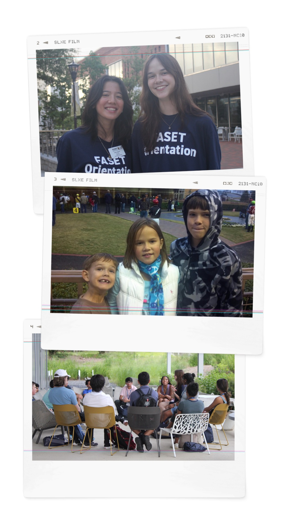

home
experience
projects
contact me

A bit about me!:
I am a fourth-year computer science major at Georgia Tech (final year!!!).
I am the middle of two brothers.
I worked as a software and data intern at U.S. Paint summer '24.
I was a FASET leader the summer of my third-year!
I've worked at an animal refuge, two pizza places, and a Panera.
I am a former member of Alpha Chi Omega at Tech.
Why Computer Science?
I have a passion for problem solving and puzzles and CS has plenty of both.
I also enjoy gaming, creating, art, coding, and digital media
and this way I have a plethora of skills to get a job in one of these fields.
Why People-Media?
It equips me with a unique blend of technical expertise and a deep understanding
of human-computer interaction, multimedia technologies, and user-centered design.
With my degree, I am well-equipped to develop innovative,
intuitive solutions that bridge technology and user needs.